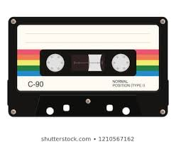

The Compact Cassette or Musicassette (MC), also commonly called the cassette tape, audio cassette, or simply tape or cassette, is an analog magnetic tape recording format for audio recording and playback. It was developed by Philips in Hasselt, Belgium, and introduced in September 1963.[2] Compact Cassettes come in two forms, either already containing content as a prerecorded cassette (Musicassette), or as a fully recordable "blank" cassette. Both forms are reversible by the user.[3] The compact cassette technology was originally designed for dictation machines, but improvements in fidelity led the Compact Cassette to supplant the stereo 8-track cartridge and reel-to-reel tape recording in most non-professional applications.[4] Its uses ranged from portable audio to home recording to data storage for early microcomputers. The first cassette player (although mono) designed for use in car dashboards was introduced in 1968. Between the early 1970s and continuing through the 1990s, the cassette was one of the two most common formats for prerecorded music, first alongside the LP record and later the compact disc (CD).[5] Compact Cassettes contain two miniature spools, between which the magnetically coated, polyester-type plastic film (magnetic tape) is passed and wound.[6] These spools and their attendant parts are held inside a protective plastic shell which is 4 by 2.5 by 0.5 inches (10 cm × 6.3 cm × 1.3 cm) at its largest dimensions. The tape itself is commonly referred to as "eighth-inch" tape, supposedly 1⁄8 inch (3.17 mm) wide, but it is slightly larger: 0.15 inches (3.81 mm).[7] Two stereo pairs of tracks (four total) or two monaural audio tracks are available on the tape; one stereo pair or one monophonic track is played or recorded when the tape is moving in one direction and the second (pair) when moving in the other direction. This reversal is achieved either by flipping the cassette, or by the reversal of tape movement ("auto-reverse") when the mechanism detects that the tape has come to an end.[8]
In 1935, decades before the introduction of the Compact Cassette, AEG released the first reel-to-reel tape recorder (in German: Tonbandgerät), with the commercial name "Magnetophon". It was based on the invention of the magnetic tape (1928) by Fritz Pfleumer, which uses similar technology but with open reels (for which the tape was manufactured by BASF). These instruments were very expensive and relatively difficult to use and were therefore used mostly by professionals in radio stations and recording studios. By 1953, 1 million U.S. homes had tape machines.[9] In 1958, following four years of development, RCA Victor introduced the stereo, quarter-inch, reversible, reel-to-reel RCA tape cartridge.[10][11] However, it uses a large cassette (5 × 7 in, or 13 × 18 cm), and offered few pre-recorded tapes. Despite the multiple versions, it failed. Later the similar Elcaset also failed in the market. Consumer use of magnetic tape machines took off in the early 1960s, after playback machines reached a comfortable, user-friendly design. This was aided by the introduction of transistors which replaced the bulky, fragile, and costly vacuum tubes of earlier designs. Reel-to-reel tape then became more suitable for household use, but still remained an esoteric product. WIRAG, the Vienna division of Philips also developed a cartridge, described as single-hole cassette, adapted from its German described name Einloch-Kassette.[12] Tape and tape speed were identical with the Compact Cassette. Grundig came up with the DC-International derived from blue prints of the Compact Cassette in 1965, but failed on the demand of distributing companies.
CD.com || DVD.com